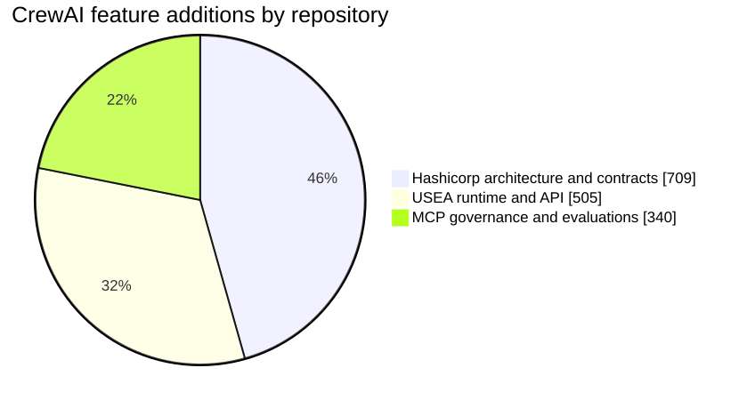
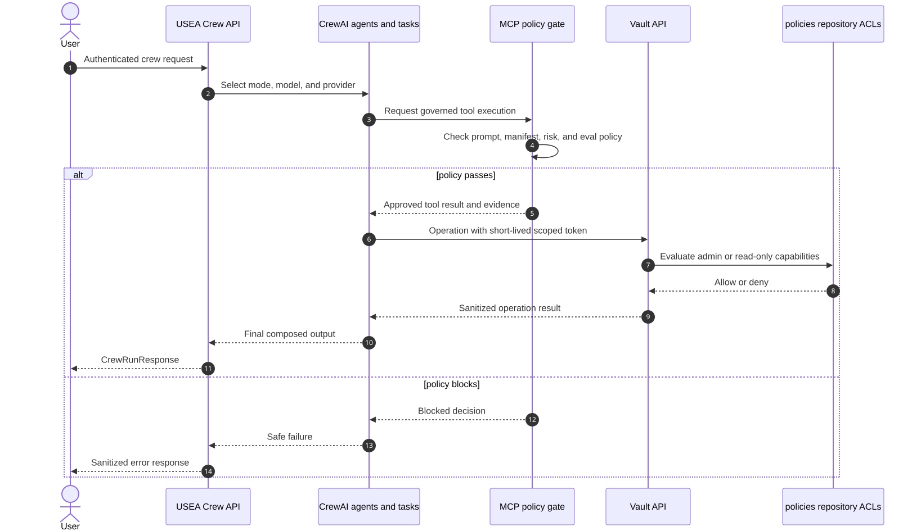

Visual review artifact for comparing the CrewAI feature work with the current
mainbranch across every participating repository.
Snapshot date: 2026-08-15
Comparison basis: three-dot Git comparison, origin/main...HEAD, which shows the changes introduced since each feature branch diverged from main.
The feature is distributed across four repositories. It should be reviewed as one vertical capability rather than as four unrelated diffs.

| Repository | Branch compared with main |
Files changed | Additions | Deletions | Improvement represented |
|---|---|---|---|---|---|
| Hashicorp-Azure-LLM | copilot/crewai-integration-scaffolding |
34 | 709 | 0 | Architecture, agents, task contracts, environment profiles, governance, runbooks, and metrics |
| USEA | copilot/resume-crewai-scaffolding |
10 | 505 | 0 | Working multi-agent runtime, task composition, authenticated API endpoint, models, dependencies, and tests |
| MCP | copilot/resume-crewai-scaffolding |
14 | 340 | 1 | Governed-agent profile, MCP configuration, prompt/tool baselines, risk policy, refusal evaluations, and tests |
| policies | main |
0 | 0 | 0 | Existing external Vault ACL control plane; included because CrewAI-driven Vault actions ultimately depend on these scoped capabilities |
| Feature total | 58 | 1,554 | 1 | Design → runtime → governance → authorization |

The policy repository is omitted from the additions chart because it is already on main and has no feature-branch delta. Its role is architectural and operational, not a claim of new lines in this branch set.
| Capability | Current main baseline |
CrewAI feature outcome |
|---|---|---|
| Multi-agent design | No shared cross-repository CrewAI operating model | Named architecture, specialist agents, ordered tasks, contracts, environment controls, approval gates, runbooks, and metrics |
| Runtime execution | No CrewAI workflow exposed through USEA | Research/writing and operations crews with reusable agents and tasks, model/provider selection, and authenticated POST /v1/crew/run execution |
| Governance | Existing generic policy-gate framework | CrewAI-specific profile, reviewed prompt and tool baselines, MCP configuration, risk classifications, refusal fixtures, and automated gate tests |
| Vault authorization | Existing admin and read-only Vault policies | Explicit integration boundary: CrewAI/Vault workflows remain constrained by short-lived, role-scoped Vault tokens rather than root-equivalent access |
| Verification | No end-to-end CrewAI review surface | A traceable path from architecture to runtime behavior, policy evidence, tests, and final Vault enforcement |
This repository defines what the CrewAI system is intended to do and how repositories exchange governed requests and evidence.
Key review surfaces:
crewai/architecture/sequence-flow.md: plan-first workflow from infrastructure design through post-deploy verification.crewai/agents/infra_crew.yaml: orchestrator and specialist-agent composition.crewai/contracts/compatibility-matrix.md: cross-repository adoption and compatibility expectations.crewai/governance/guardrails.md: safety boundaries and approval requirements.crewai/metrics/evaluation-framework.md: measurable quality and reliability targets.Visual diff: compare main...copilot/crewai-integration-scaffolding
This repository turns the architecture into application behavior.
Key review surfaces:
crew/agents.py: research, writing, and operations agent definitions.crew/tasks.py: reusable task contracts and context chaining.crew/crew.py: sequential crew orchestration and supported execution modes.api/crew_endpoints.py: authenticated, non-blocking HTTP execution surface.tests/test_crew.py: runtime and endpoint behavior coverage.Visual diff: PR #25 · Files changed
Direct comparison: main...copilot/resume-crewai-scaffolding
This repository makes the CrewAI runtime reviewable and enforceable as an AI-SDLC workload.
Key review surfaces:
profiles/crewai.yaml: governed-agent profile joining prompt, tools, MCP servers, and evaluations.configs/crewai.mcp.json: pinned and reviewed MCP server configuration.evals/crewai_suite.yaml: expected tool use and blocking refusal cases.policies/tool_manifest_policy.yaml: risk classification for CrewAI tools.tests/test_crewai_profile.py: prompt, tool-manifest, and evaluation gate tests.Visual diff: PR #2 · Files changed
Direct comparison: main...copilot/resume-crewai-scaffolding
This repository has no CrewAI feature branch and is currently identical to origin/main. It is included because it holds the final authorization rules for Vault operations initiated through an agentic workflow.
Key review surfaces:
vault/policies/vault-web-agent-admin.hcl: scoped administrative capabilities for health, seal state, auth methods, secrets engines, ACL policies, identity, and token lifecycle. It deliberately excludes root-equivalent path "*" access.vault/policies/vault-web-agent-readonly.hcl: deny-by-default inspection capabilities with no write, delete, sudo, seal/unseal, or secret-value access.POLICY_SYNC_STEPS.md: policy synchronization procedure for consuming repositories.Visual baseline: main branch
Branch status: no main...HEAD changes at the time of this snapshot.

This file is intentionally copied into the crewai/ directory of all four repositories so each pull request exposes the same cross-repository review context.